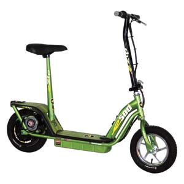

This is an example of how simple an electric vehicle (EV) solution can be: Bonnie, my 63-year-old neighbor, hates buying gasoline.
On her own, without any prior knowledge of electric vehicles, Bonnie went shopping for a small electric scooter with the intention of riding it for her one-mile commute to work. The salesman, hearing what she intended to do with it, advised her to buy a large model, a Razor E500S, which she purchased for $200.
Bonnie keeps a log book in her car and writes down the dollar amount when she refuels her car. I used this log to calculate that she averaged $15.75 a week for gas during the year prior to the scooter’s arrival. Since the scooter purchase, her weekly gas expense has dropped to $9.30. With a savings of $6.45 a week, she saved $258 on gas during the first 10 months.
Now for the bonus, her employer has a program in place that rewards employees $25 cash for each month they don’t drive a car to work. So, Bonnie is now getting $25 in cash each month just for riding her scooter, plus the big gas savings.
Razor is no longer making the 500 series, but the IZIP I-500 electric scooter, available at sporting goods stores, is an adequate substitute. - Mother Earth News
|
 COURTESY CURRIE TECHNOLOGY Using an electric scooter can dramatically cut your carbon footprint. |
|
|